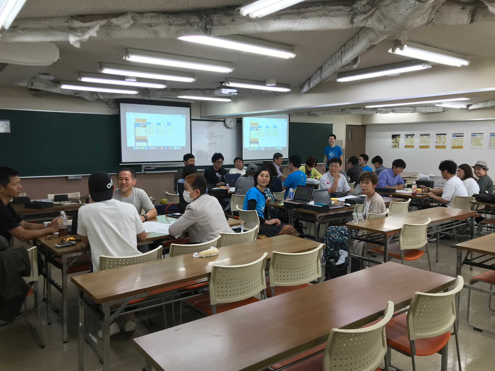
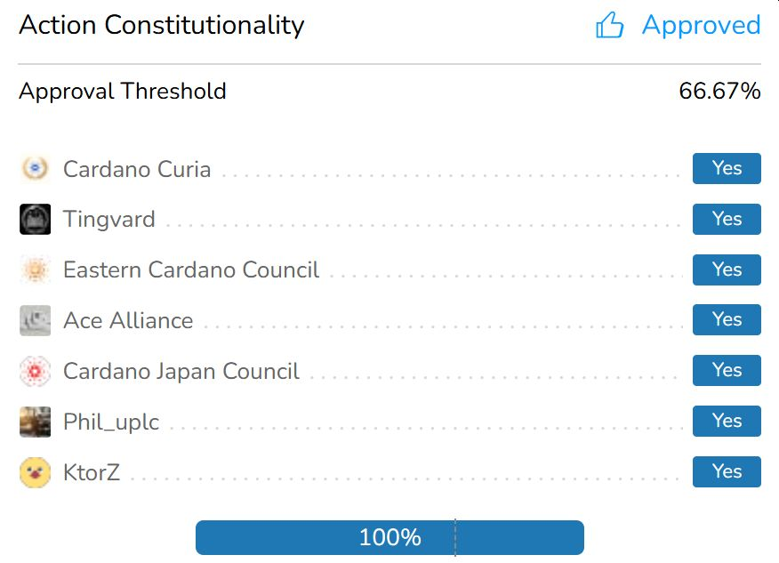

憲法適合性を確認
提案の内容、根拠、手続きが、Cardano憲法の要件に合っているかを確認します。
Cardano Governance
AID1は、CardanoのConstitutional Committeeとして ガバナンスに参加しています。提案の賛否だけでなく、 その根拠や制度上の論点を丁寧に確認し、分かりやすく共有することを大切にしています。

Cardanoのガバナンスは、憲法委員・DRep・SPOという3つのガバナンス主体が、それぞれの役割でガバナンスアクションに投票して運営されています。
AID1では憲法委員とSPOとしてガバナンス投票に参加しています。DRepは、自分に合うDRepへ委任しています。
Role
Cardanoのガバナンスアクションが、Cardano憲法に適合しているかを審査する役割です。 提案への賛成・反対とは別に、憲法上の要件を満たしているかを判断します。
提案の内容、根拠、手続きが、Cardano憲法の要件に合っているかを確認します。
合憲・違憲・棄権の判断だけでなく、判断に至った理由をできる限り明確にします。
難しい制度や提案を、日本語で理解しやすい形に整理して発信します。
Constitutional Committee Members
CardanoのConstitutional Committeeは7つのメンバーで構成されています。
2024–2025
Seira Yun ・ Rena Oishi ・ Hix ・ Hideki Takeshi ・ Shusuke Wakuda
2025–2026
Hideki Takeshi ・ Akyo ・ nagamaru ・ Shusuke Wakuda
Governance journey
運営として企画や資料作りから参加しました。

暫定憲法委員に選出され、コロラド州IOG本社でCardano憲法や委員の役割について学びました。 投票いただき、ありがとうございました。
ブエノスアイレスで開かれた憲法制定会議に参加しました。
初代憲法委員として選出され、正式に活動（憲法適合性審査）を開始しました。

Governance links
関連するリンクです。
Cardano Improvement Proposals（CIPs）はCardanoの正式な設計書です。
開く ↗ ConstitutionCardanoの公式サイトで憲法を確認できます。
開く ↗ Knowledge baseCardanoガバナンスの制度や仕組みについて確認できます。
開く ↗ Explorerガバナンスアクションや投票状況などを確認できるエクスプローラーです。
開く ↗ Governance toolガバナンスアクションの確認や、投票などに利用できる公式ガバナンスツールです。
開く ↗ Governance toolガバナンスアクションや投票結果などを、シンプルに確認できるツールです。
開く ↗